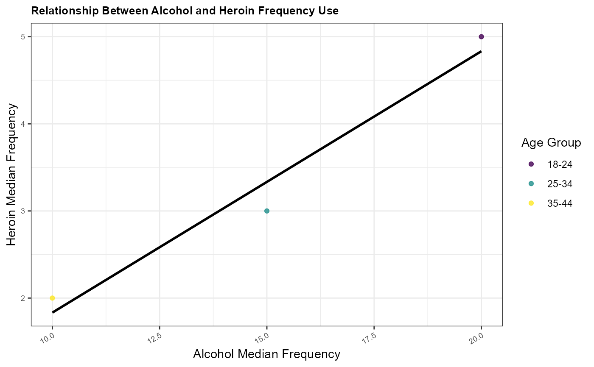

R/eda_functions.R
create_scatter_plot.RdFunction to create scatter plot with regression line
create_scatter_plot(
data,
x_var,
y_var,
color_var,
title,
x_label,
y_label,
output_file
)A .csv dataframe containing data to be plotted.
A string specifying the x-axis variable.
A string specifying the y-axis variable.
A string specifying the color variable for the scatter plot.
A string specifying the plot title.
A string specifying the x-axis label.
A string specifying the y-axis label.
A string specifying the output file path for saving the plot.
ggplot objects representing the generated plot
sample_data <- data.frame(
age = c("18-24", "25-34", "35-44"),
alcohol.use = c(80, 75, 60),
alcohol.frequency = c(20, 15, 10),
marijuana.use = c(50, 30, 20),
heroin.frequency = c(5, 3, 2),
class = c("youth", "adult", "adult"),
n = c(100, 200, 150)
)
create_scatter_plot(
sample_data,
"alcohol.frequency",
"heroin.frequency",
"age",
"Relationship Between Alcohol and Heroin Frequency Use",
"Alcohol Median Frequency",
"Heroin Median Frequency",
"output/eda-test/test5.png"
)
#> `geom_smooth()` using formula = 'y ~ x'
#> `geom_smooth()` using formula = 'y ~ x'
